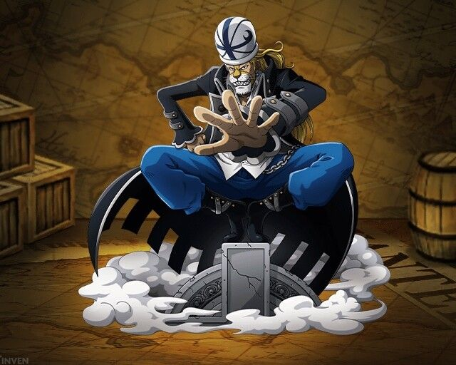

미호크 자발적 아싸설ㅋㅋㅋㅋㅋㅋㅋㅋ신세계편 시작하고 칠무해 해체하더니 해군이 전부 잡으러 갔습니다. 근데 미호크랑 행콕이 잡힐 줄은 몰랐습니다.
tecaa
2022-06-13 오후 06:26:41
근데그 좀비?만들던 칠무해는 근황나왔습니까??
파시스타한태 노려진게 마지막같았는데
shm0888
(글쓴이)
2022-06-13 오후 06:32:01
그 캐릭터는 겟코 모리아입니다. 정상전쟁이 끝난 후 도플라밍고랑 파시피스타가 죽이려고 했는데 '갑자기 사라졌다' 고 합니다. 알고보니 부하였던 투명투명열매 능력자 얍살롬이 구해줬던 것이었습니다. 그 후에 얍살롬이 검은수염 일당에 잡혀가고 모리아 혼자서 상남자답게 검은수염 섬에 쳐들어갑니다. 갔더니 이미 검은수염 일당이 얍살롬을 죽여서 열매를 뺏었고 모리아도 얍살롬 죽은걸 확인하고 검은수염 간부에게 죽습니다.

후원댓글 10개
댓글 10개 ▼